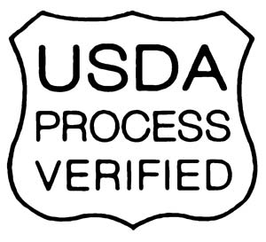

Labels that identify a package of beef as “grass-fed” don’t always tell the whole story. To ensure that the product is what it claims to be, the U.S. Department of Agriculture (USDA) tells us to watch for their “process verified shield,” but what exactly does that guarantee? We asked grass-fed beef expert Jo Robinson to explain.
Q: What’s the story behind the shield?
A: The shield only verifies that the beef meets standards for a grass-fed label as set by the USDA in October 2007, which were meant to define the term “grass-fed.” A definition was needed because all cattle eat grass for the first 6 to 12 months, but then most are shipped to feedlots and fattened on grain for the rest of their lives. Some producers marketed this meat as grass-fed even though the animals were actually finished in a feedlot.
Q: What standards must be met to qualify?
A: To qualify for the USDA grass-fed label, cattle must be fed only mother’s milk and forage (grass and other greens) during their lifetime. The forage can be grazed or consumed as hay or other stored forage. Also, the cattle must have access to pasture “during the growing season.” (Read the ruling here)
Q: Are there any objections to the standards?
A: Many people think they don’t go far enough. For example, meat can qualify for the shield even if the animals are confined to a pen and fed hay for months out of the year. Also, they can be given hormones and a steady diet of antibiotics.
Q: Is there a more comprehensive label?
A: The American Grassfed Association (AGA), an organization of pasture-based ranchers, consumer groups and researchers, is creating an alternative label. To qualify for the stricter AGA label, cattle cannot be confined or treated with hormones or antibiotics. The AGA maintains that this is closer to the public’s perception of “grass-fed.” (To read their full response, visit the AGA Web site.)
Q: What are the benefits of grass-fed beef?
A: Compared with feedlot meat, grass-fed beef is higher in “good” fats, lower in “bad” fats, and higher in vitamins and antioxidants. Raising cattle on pasture benefits the farmers, the environment and the animals themselves. (Go to Eat Wild for more information. Also see What You Need to Know About the Beef You Eat.)
|
 USDA The Process Verified Shield tells you that a grass-fed beef product meets the USDA’s standards, but does it meet yours? |
|
|